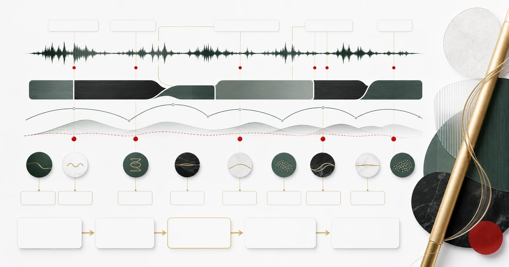

部分核實版權限制
主題索引
曲式分析
本頁彙集「曲式分析」的專題與參考資料。目前收錄 4 筆來源，可由下列文章開始閱讀，再回來源查考。
L2 · 已核實摘要11 個去重來源42 項核對紀錄
42 項已記錄核對的陳述 · 4046 字正文
本頁達到站內正文門檻，並附核對來源。層級反映資料覆蓋，不等於外部專家認證；引用前請核對原文。 來源數依站內規則去重，尚未逐一追查相互引用的依賴關係。
已核實專題
4 篇
相關來源
4 筆
部分核實版權限制
部分核實版權限制
部分核實版權限制
本篇視覺示意（非教學圖）
